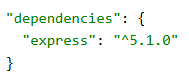
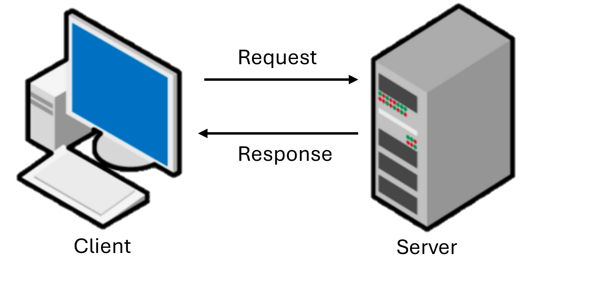

n 2n 2
n 2n 2
function something() { // function scope
console.log("what is this?")
}
{ //block scope
("what is this?")
}
app.get('/', (req, res) => {
({data: "Welcome to the first server!"});
});
npm init
npm install express

const express = require('express');
const app = express();
app.listen(8080);

app.get('/snowstorms', (req, res) => {
res.send({data: "Warning: snowstorm ahead!"});
});
router.get('/', (req, res) => {
res.send(frontpagePage);
});